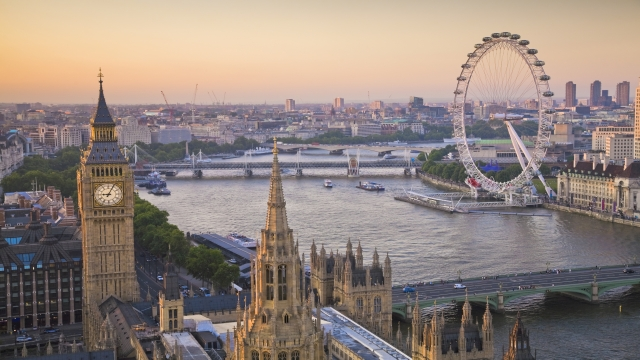

โอลิมปิกฤดูร้อน (Summer Olympic Games)
กีฬาโอลิมปิกฤดูร้อน หรือ ซัมเมอร์โอลิมปิกเกมส์ (อังกฤษ: Summer Olympic Games) เป็นการแข่งขันกีฬาหลายชนิดระหว่างประเทศ ซึ่งตามปกติจะมีการจัดแข่งขันทุกสี่ปี โดยคณะกรรมการโอลิมปิกสากล (International Olympic Committee หรือ IOC) ในแต่ละครั้งจะมีการมอบเหรียญรางวัล ผู้ชนะเลิศได้เหรียญทอง อันดับสองได้เหรียญเงิน และอันดับสามได้เหรียญทองแดง การมอบเหรียญนี้เป็นประเพณีตั้งแต่ปี 1904 ต่อมามีการจัดแข่งขันโอลิมปิกฤดูหนาว
ประวัติ
การแข่งขันนั้นเริ่มต้นครั้งแรกด้วยกีฬาเพียง 42 ประเภท และนักกีฬาชายเพียง 250 คน จนมีจำนวนเพิ่มขึ้นถึงมากกว่า 10,000 คน ของนักกีฬาชายและหญิงจาก 202 ประเทศทั่วโลก คณะกรรมการจัดการแข่งขันกีฬาโอลิมปิกฤดูร้อน 2008 ที่ปักกิ่ง คาดการณ์ว่าจะมีนักกีฬาเข้าร่วมแข่งขันประมาณ 10,500 คน เข้าชิงชัยใน 302 รายการ
นักกีฬาถูกส่งเข้าแข่งขันโดยคณะกรรมการโอลิมปิกของประเทศต่าง ๆ (NOC-National Olympic Committee) เพื่อแสดงจำนวนพลเมืองในบังคับของประเทศตน เพลงชาติและธงชาติประกอบพิธีมอบเหรียญ และตารางแสดงจำนวนเหรียญที่ชนะ โดยมีเพียง 4 ประเทศที่ส่งนักกีฬาเข้าแข่งขันในโอลิมปิกฤดูร้อนทุกครั้ง ได้แก่ ออสเตรเลีย สหราชอาณาจักร กรีซ และสวิตเซอร์แลนด์ และมีเพียงประเทศเดียวเท่านั้นที่ชนะและได้รับเหรียญทองอย่างน้อย 1 เหรียญจากการแข่งขันทุกครั้ง คือ สหราชอาณาจักร โดยได้รับตั้งแต่ 1 เหรียญทอง ในปี 1904 1952 และ 1996 จนถึงได้รับ 56 เหรียญทอง ในปี 1908
ประเภทกีฬา
- A : athletics, aquatics, gymnastics
- B : basketball, cycling, football, tennis, volleyball
- C : archery, badminton, boxing, judo, rowing, shooting, table tennis, weightlifting
- D : canoe/kayaking, equestrian, fencing, handball, field hockey, sailing, taekwondo, triathlon, wrestling
- E : modeen pentathlon, golf, rugby
รายชื่อเจ้าภาพ
| ปี |
เจ้าภาพ |
Event |
จำนวนประเทศ |
ประเภทกีฬา |
เจ้าเหรียญทอง |
| 2000 |
ซิดนีย์, ออสเตรเลีย |
Sydney 2000 |
199 |
300 |
สหรัฐอเมริกา |
| 2004 |
เอเธนส์, กริซ |
Athens 2004 |
201 |
301 |
สหรัฐอเมริกา |
| 2008 |
ปักกิ่ง, จีน |
Beijing 2008 |
204 |
302 |
จีน |
| 2012 |
ลอนดอน, สหราชอาณาจักร |
London 2012 |
204 |
302 |
สหรัฐอเมริกา |
| 2016 |
ริโอ เดอ จาเนโร, บราซิล |
Rio 2016 |
206 |
306 |
สหรัฐอเมริกา |
SYDNEY 2000
มหกรรมกีฬาโอลิมปิกฤดูร้อนครั้งที่ 27 ประจำปี ค.ศ. 2000 (พ.ศ. 2543) หรือในอีกชื่อว่า มหกรรมกีฬาแห่งสหัสวรรษ เป็นงานกีฬาระดับโลกจัดขึ้นที่นครซิดนีย์ รัฐนิวเซาท์เวลส์ ประเทศออสเตรเลีย ถือได้ว่าเป็นการแข่งขันกีฬาแห่งมวลมนุษยชาติในห้วงรอยต่อของสหัสวรรษ ซึ่งกว่าการแข่งขันจะเริ่มต้นในวันที่ 15 กันยายน 2543 และไฟในกระถางคบเพลิงดับลงในวันที่ 1 ตุลาคม ของปีเดียวกัน
เมืองเจ้าภาพ: ซิดนีย์
คำขวัญ: Share the Spirit
มาสคอต: โอลลิ ซิด มิลลี่
สนามกีฬาหลัก: สนามกีฬาออสเตรเลีย
ATHENS 2004
มหกรรมกีฬาโอลิมปิกฤดูร้อนครั้งที่ 28 ประจำปี ค.ศ. 2004 (พ.ศ. 2547) (อังกฤษ: 2004 Summer Olympics) เป็นการแข่งขันกีฬาโอลิมปิกฤดูร้อนครั้งที่ 25 จัดขึ้นระหว่างวันที่ 13-29 สิงหาคม ค.ศ. 2004 ที่กรุงเอเธนส์ ประเทศกรีซ มีนักกีฬาร่วมแข่งขันทั้งสิ้น 11,099 คน และเจ้าหน้าที่อีก 5,501 จาก 202 ประเทศ
เมืองเจ้าภาพ: เอเธนส์
คำขวัญ: Welcome home
มาสคอต: อาธีนา ฟีวอส
สนามกีฬาหลัก: สนามกีฬาโอลิมปิก

BEIJING 2008
มหกรรมกีฬาโอลิมปิกฤดูร้อนครั้งที่ 29 ประจำปี ค.ศ. 2008 (พ.ศ. 2551) (เอ้อร์หลิงหลิงปาเหนียน เซี่ยจี้อ้าวหลินผี่เค่อยวื่นต้งฮุ่ย;) เป็นการแข่งขันกีฬาโอลิมปิกฤดูร้อนครั้งที่ 29 จัดขึ้น ณ กรุงปักกิ่ง ฮ่องกง ชิงเต่า ชิงหวงเต่า เซี่ยงไฮ้ และเสิ่นหยาง สาธารณรัฐประชาชนจีน ระหว่างวันที่ 8 สิงหาคม ถึง 24 สิงหาคม พ.ศ. 2551
เมืองเจ้าภาพ: ปักกิ่ง
คำขวัญ: one world, one dream
มาสคอต: ฝูหวา
สนามกีฬาหลัก: สนามกีฬาแห่งชาติ (ปักกิ่ง)
LONDON 2012
การแข่งขันกีฬาโอลิมปิกฤดูร้อนครั้งที่ 30 ประจำปี ค.ศ. 2012 (พ.ศ. 2555) (2012 Summer Olympics) มีชื่ออย่างเป็นทางการว่า การแข่งขันกีฬาโอลิมปิกครั้งที่ 27 (Games of the XXVII Olympiad) จัดขึ้นที่กรุงลอนดอนของสหราชอาณาจักร ระหว่างวันที่ 27 กรกฎาคม ถึง 12 สิงหาคม 2555
เมืองเจ้าภาพ: ลอนดอน
คำขวัญ: inspire a Generation
มาสคอต: เว็นล็อก และ แมรด์วิลล์
สนามกีฬาหลัก: สนามกีฬาโอลิมปิก (ลอนดอน)

RIO DE JANERO 2016
กีฬาโอลิมปิกฤดูร้อน 2016 หรือชื่อที่เป็นทางการ กีฬาโอลิมปิกครั้งที่ 31 หรือเป็นที่รู้จักในชื่อ รีโอ 2016 เป็นมหกรรมกีฬานานาชาติที่สำคัญในประเพณีโอลิมปิก ซึ่งจัดในที่นครรีโอเดจาเนโร สหพันธ์สาธารณรัฐบราซิล จัดขึ้นระหว่างวันที่ 5 ถึง 21 สิงหาคม พ.ศ. 2559
เมืองเจ้าภาพ: ริโอ เด จาเนโร
คำขวัญ: New World
มาสคอต: วินิเชียส
สนามกีฬาหลัก: สนามกีฬามารากานัง

Search